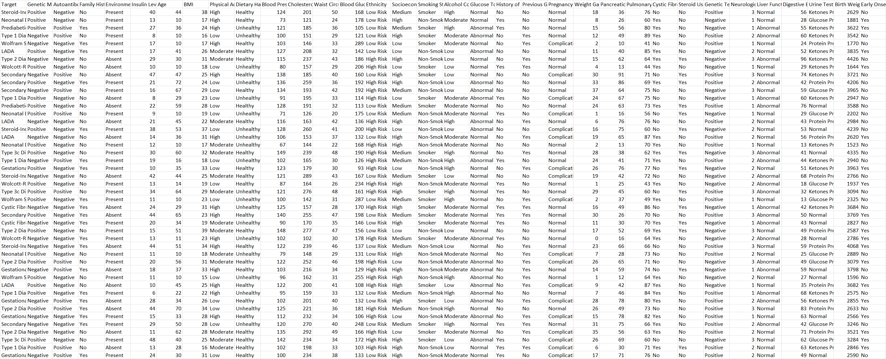
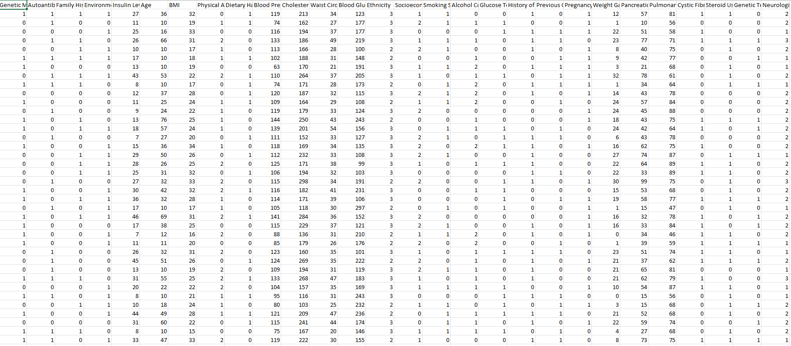
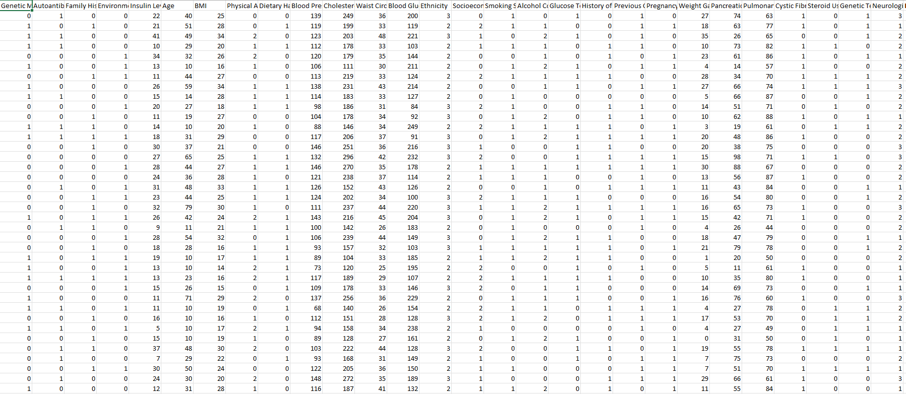
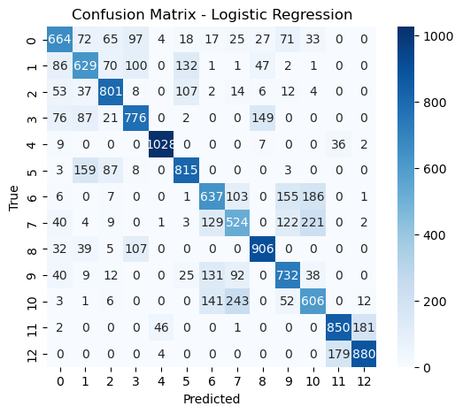
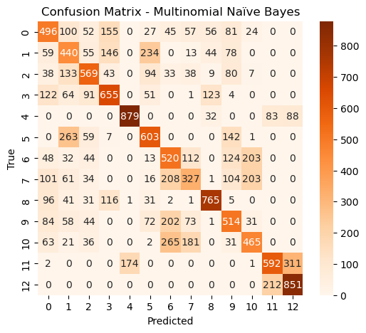

Understanding and Comparing Logistic Regression and Multinomial Naïve Bayes
Linear regression is a supervised learning algorithm that models the linear relationship between independent variables and a continuous target variable. It fits the best line through data points to predict future outcomes.
Logistic regression is used when the target variable is categorical (often binary). It models the probability that a sample belongs to a particular class using the Sigmoid function.
Both are supervised and involve linear combinations of inputs. The key difference is in their output: linear regression predicts continuous values, while logistic regression predicts probabilities for classification.
Yes. The Sigmoid function squashes the linear combination of inputs into a range between 0 and 1, representing probability for classification.
Logistic regression uses Maximum Likelihood Estimation (MLE) to find the parameters (weights) that best fit the data. MLE maximizes the likelihood that the model correctly predicts class labels.
The cleaned diabetes dataset was used for training and testing Naïve Bayes models.

Download Cleaned Dataset
For Regression modeling, we reused the cleaned and encoded dataset originally prepared for the Decision Tree model
(dt_prepared.csv). This dataset was already preprocessed with categorical features encoded, missing values handled, and the
target column labeled appropriately. Reusing this file ensured consistency across our models, saved time, and allowed for a
direct comparison of model performance using the same input structure.
We split the dataset using an 80/20 ratio:

Download Train Sample
Download Test SampleBoth models were evaluated using confusion matrices and classification reports to compare performance.


From the confusion matrices and accuracy scores, it's clear that Logistic Regression handles the data more effectively than Multinomial Naïve Bayes. Logistic regression’s higher precision and recall highlight its ability to model relationships better for multiclass classification tasks. We learned that choosing a model aligned with the feature type is essential—Logistic Regression shines in numeric datasets, while Multinomial NB is more tailored to discrete, count-based inputs.